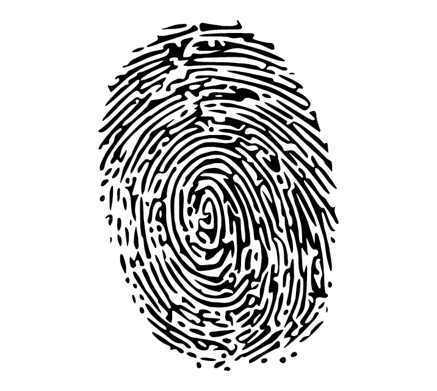

When making an agreement recognized by law between two parties (a contract, in common parlance), the law generally considers the function of a signature to have three parts:
1. To provide evidence of the signatory’s identity;
2. To show evidence of their intention to make a signature, and;
3. That the signatory accepts the contents of the contract.
Signing paperwork is such a fundamental legal act, that almost every document of commercial importance is signed. Despite this, the artifact of the signature itself is rarely afforded much attention.
To find out why, we have to understand the difference between the Form and Function of a signature.
Drag the face to the signature
When it comes to certifying your legal intentions, the illegible squiggly line (or more politely; your signature) is a relic that has endured for more than a millennium.
Seemingly impervious to the progress of time and technology, why does the venerable thrash of pen on paper seem so resistant to change — and why should we do something about it?
From A to B, we took a detour through C before arriving at D. Read on to find out why…
It could be imagined that there is something magical about a signature; as if our deftly-drawn scrawls of ink are imbued with a higher legal power to at once identify and bind their author. But do these arbitrary marks actually have any intrinsic legal value? Looking closer, the answer isn’t quite clear to the everyday signatory.

There are a number of e-signature laws across the world, such as ESIGN and UETA, which define what constitute a legally binding esignature. Just typing a name on a form and clicking submit has several issues that prevent it being upheld in a court of law, these are:
Anyone could type a name on a form – for it to be legally binding there must be a way to prove the typed name belongs to the person it represents. For example, in the ApproveMe esignature platform, we use a digital certificate to prove the person signing a document, is who they say they are. Digital certificates are issued by certificate authorities (CA); CA’s check who you are when they issue the certificate. The certificate then becomes a digital version of you.
When you electronically sign a document online the document needs to be tied to the signature itself. This makes sure that if anything changes in the document, for example, someone changes a clause from “I will pay $1000” to “I will pay $100” the change will be spotted.
Simply typing your name into a document cannot tie the signature to the document. You need to have specialist software like ApproveMe to ‘hash’ the document content. Hashing the document creates a unique ‘fingerprint’ – if the document changes, you’ll be warned as your signature will become invalid and an event of the change will be captured.